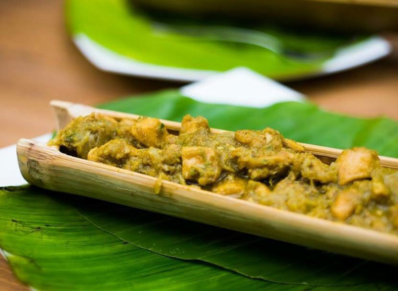
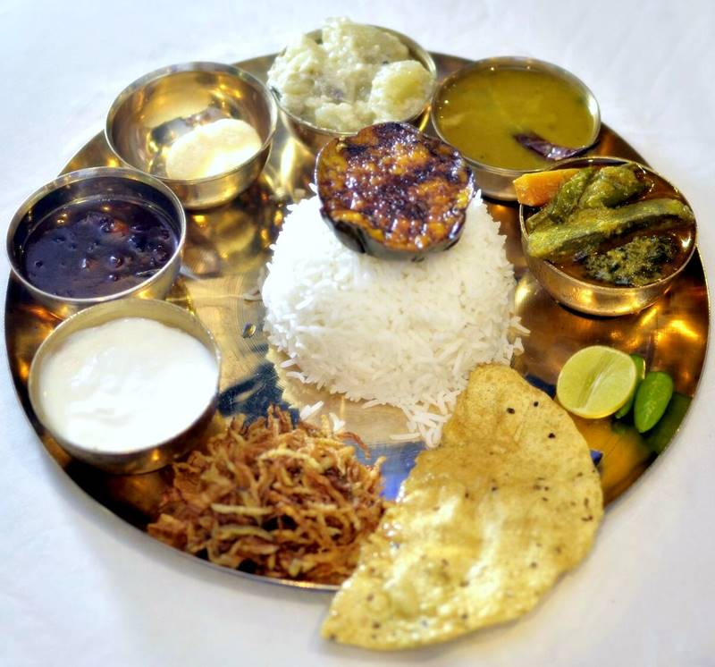
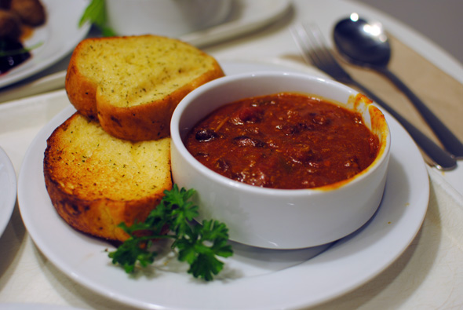

Peda Ting Ting
Description
A popular stop on boat trips to Shuvalong Falls,
this shanty-looking restaurant, on a small low-lying island,
does good-quality indigenous food in an unmatched location.
Has an English menu. Expect a round trip from Reserve Bazar,
including eating time, to take at least two hours.
Restaurant features
Takeout, Reservations, Outdoor Seating, Seating.

Biryani House
Description
Pocket-sized locals’ favourite with no English menu but a manager who can talk you
through which curries and biryanis are on offer that day. Great fun, good value, and
also a good bet for dhal-and-roti breakfasts.
Restaurant features
Seating, Waitstaff, Takeout

Thai Mart
Description
Run by a young and friendly group of Chakma staff and cooks,
this relaxed restaurant with bamboo roofing does a mix of Chakma and Bengali dishes.
There's an English menu, but despite the name, Thai food doesn't appear on it.
Restaurant features
Reservations, Seating, Waitstaff
Cuisine
Barbecue, Asian